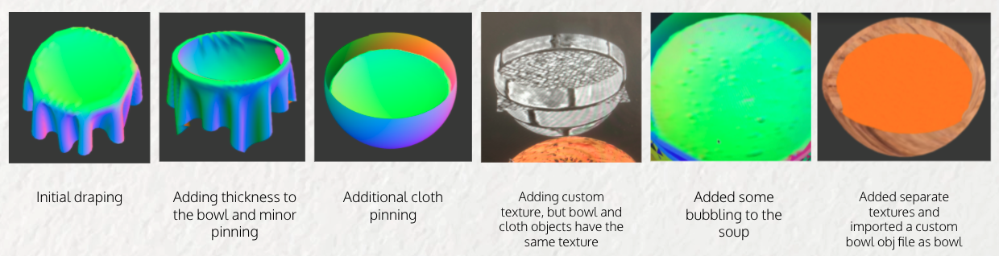

Soupsim aims to create a photorealistic rendering of soup in an efficient manner. In this project, we use a point mass and spring model in order to replicate soup movement within its container. We aim to obtain a ‘moving’ soup that is computationally cheaper than particle simulation yet more realistic than a still object. This is achieved by avoiding particle simulation all together by instead using a cloth in order to replicate the surface of the soup. By pinning the cloth around the edges of the bowl and manipulating other factors, such as damping, texturing, and spring placement, we are able to create a ‘moving’ replication of soup.
To implement SoupSim, we first explored simulating soup using particle simulation via the Navier-Stokes equations. However, upon further reasoning, we determined that capturing the flow of soup was less important to us than emulating the soup in a mostly static state, as this is more typically how one sees and interacts with soup. This approach would also set our simulator apart from other liquid simulators, trading off physical realism with computational complexity. Particle simulation is generally much more computationally intensive than our grid-based solution, as renders of previous fluid simulator projects could take hours on end to load. Hence, we pivoted from a particle-based model to a point mass grid-based implementation, simulating the bubbling surface of the soup inside of a bowl. To accomplish this, we started with our project 4 cloth simulator code, and adapted and added features to it.
First, we needed to make sure the soup would stay in place when the simulation began. Simply pinning the four corners of the cloth was not enough, as the other point masses in the perimeter of the square-shaped cloth would not behave in a soup-like manner, dangling across the bowl and such. Hence, we wrote an algorithm that pinned point masses that were a small distance away from the outer circle of the bowl, such that point masses along a circle outlining the bowl’s edge were all pinned, making sure the soup stays in the bowl.
An important part of photorealistic soup renderings is texturing. In the project 4 texturing code, the same texture was applied to every object in the scene. However, we needed to apply different textures to different elements of the scene; for example, applying a porcelain texture to the bowl and a plain soup-colored texture to the soup. To do this, we had to learn some basic OpenGL in order to properly bind textures to these objects. In particular, we referenced this link to assign unique textures. We also had to assign IDs to the different collision objects so that we could identify which texture belonged to which object. Most of this code is in clothSimulator.cpp.
We initially used a semi-sphere to act as a bowl, modifying the sphere shape in misc/sphere.cpp. However, it became evident that for our soup to look convincing, we needed a better, more realistic bowl shape. Rather than constructing our own bowl from scratch, we looked to the internet to download a 3D model of a bowl and figured out a way to import that 3D model, which came in the .obj format, into our renderer. This method could also be used in the future to import other scene elements, such as a spoon or a hand.
To do this, we made use of GLM, a math library for OpenGL which contained special data structures that we used in our loader. After downloading the bowl.obj and understanding how to interpret it, we wrote an algorithm to parse through any .obj file line by line, starting with adding vertices, vertex normals, and uv (i.e. texture) coordinates to respective lists. Then, to process the faces of the obj file, for each face, we read the indices of which vertex, vertex normal, and uv coordinate to use from our list, and column concatenated positions, normals, and uv coordinates matrices with the values of these attributes, face by face. Finally, we passed the matrices into OpenGL to render our triangles.
Initially, our .obj file importer seemed to be very buggy, as triangles on our bowl mesh seemed to be missing, and other triangles seemed to connect the wrong vertices. After doing some detective work, we found out that our .obj files contained faces that were quads, and we were processing them as if they were triangles. From here on out, we tried to use GL_QUADS instead of GL_TRIANGLES to render our object, which didn’t work, so we shifted to using a regex command to edit the .obj file such that each quad was converted to two triangles. After doing that and importing in our newly generated .obj file, we rendered the bowl correctly.
Initially, we researched various ways to simulate soup moving within a bowl. We then realized that after starting our simulation, when the middle of the cloth falls, a water rippling effect can be seen given we’ve pinned a circular array of point masses. From this point on, we turned the damping hyperparameter of our soup to 0, and found that we could achieve a decent simulation of moving/boiling soup just by tweaking some settings.
As soup tends to have bubbles and clumps, we wanted to additionally add some irregularities to our soup simulation. We explored various ideas, and landed on a simple yet elegant solution to generate “noise” in our soup: randomly chose springs to not add to our cloth. By randomly choosing to not add springs that would connect point masses to each other, whether that’d be shearing, structural, or bending springs, we were able to generate various shapes and sizes of “sags” in our soup that made it seem like it was bubbling. The result can first be clearly seen when using normal shading, but as texture shading doesn’t introduce shadows, we wrote a custom shader combining texture shading and diffuse shading to introduce shadows to the textured soup bubbles as well.
From building out our soup simulation, we learned that various small tweaks in the physical structure of our simulated materials can cause interesting and unexpected changes and effects. We went into this project with clear expectations and ideas of how to potentially build out our simulation only to pivot our ideas many times as experimentation and tweaking settings helped us realize just how many interesting behaviours we could simulate. We also learned that linking libraries together can be a pain, especially when the program being used doesn’t have a clear pipeline for importing third party packages. Next time, we would budget extra time to import libraries such as GLM. Lastly, we learned that refactoring code is a nontrivial task that involves more time than we thought as well. After adapting the project 4 code to run our soup simulation, multiple team members ran into build errors, and that slowed our progress down a lot. Even though we copied a lot of the same structure that was existent in the project 4 code, we didn’t think to update our CMakeLists, and also had some naming and other linking issues that slowed us down. Overall, we were introduced to a project that had very little hand-holding, and really appreciated the lessons we’ve learned along the way.
When we first attempted simulating soup with our cloth, we used the mirror shader to get results of a “rippling water droplet”, and confirmed that we can indeed use our cloth model to simulate realistic fluid surfaces.
Our project progress looked something like this, with incremental improvements as we developed more features and tweaked more parameters to our soup:
Eventually, with the addition of a more detailed bowl object imported from an obj file, as well as having different textures map to different objects, and adding our texture + diffuse shadows shader to see bubbles in the textured soup, our final results are as follows.